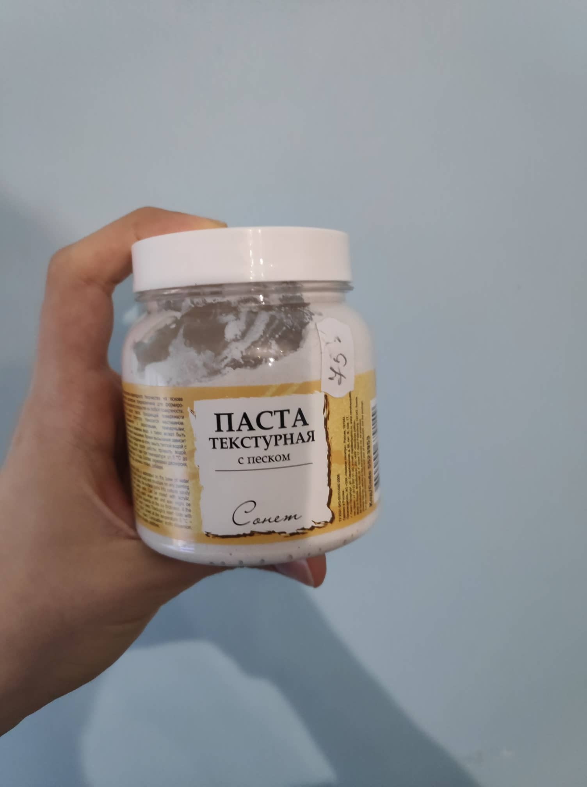

Am realizat aceasta masca fiind inspirat de mastile shinigami japoneze.
A fost realizata pe o baza de masca, pe care am acoperit-o cu hartie umeda pentru a crea o macheta,
pentru a nu folosi material in exces, a nimeri mai usor proportiile, si a asigura rezistenta
si umiditatea constanta ( ce venea de la hartia umeda )
am vopsit apoi macheta din lut cu uscare la aer cu un strat de pasta, ce a oferit textura
dar in special am urmarit sa creez un mediu pe care vopselele de acril sa se aseze uniform
